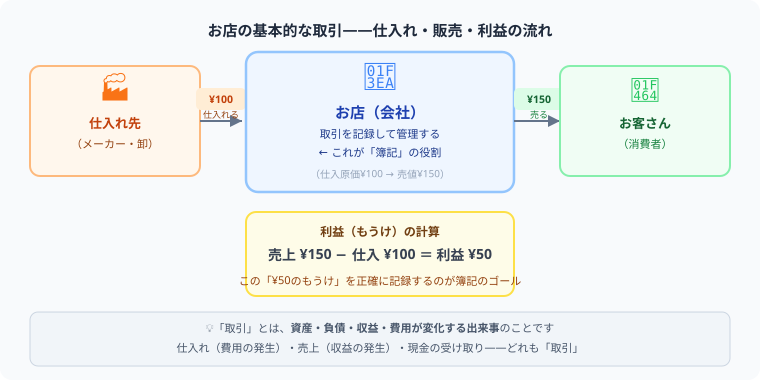

こんにちは、大谷です！
実を言うと、僕も高校生の頃に父の確定申告の書類をこっそり覗いたとき、借方・貸方やら見慣れない数字がびっしり並んでいて「うわっ、なんじゃこりゃ…！」と本気で目を逸らした過去があります（笑）。でも簿記の正体は拍子抜けするくらいシンプルで、「お店のお金がどう動いて、どこで儲けが生まれるか」を解き明かすだけのお金のパズルなんです。
この連載『ゼロからの簿記』では、そのパズルのピースを専門用語ゼロで1つずつ一緒に埋めていきます。全5回、僕と一緒に最後まで走り切りましょう！
また、僕のモチベーション維持のために、記事の末尾のほうにある【いいねボタン】をポチッと押してもらえると、めちゃくちゃ嬉しいです！
お店や会社の基本的な動きを考えてみましょう。たとえば文具屋さんなら、仕入れ先からノートを100円で仕入れて、150円でお客さんに売ります。

100円で仕入れ → 150円で販売 → 差額の50円が「利益」というお店の儲けになります。
この「商品を買う」「商品を売る」「代金を受け取る」「代金を払う」といったお金や物のやりとりのことを、簿記では取引（とりひき）と呼びます。
簿記の「取引」は、日常会話で使う「取引先」の「取引」とは少しニュアンスが違います。簿記でいう取引とは、「財産やお金が増えたり減ったりする出来事」のことです。たとえば火事で商品が燃えてしまった場合も、財産が減っているので簿記上は立派な「取引」として記録します。最初は僕もこの感覚に驚きましたが、「取引＝財産の変動」とシンプルに覚えておくと、この先の勉強がぐっと楽になりますよ。
では、取引をそのまま放置しておくとどうなるでしょう。1日に何十件も売り買いをするお店では、「今日いくら売れたのか」「今いくら現金があるのか」がすぐにわからなくなります。
実はこれ、僕自身が痛いほど思い知らされた経験があります。大学1年の頃、居酒屋のアルバイトでレジ締めを任されたときのことです。その日はなぜかレジの現金がどうしても3,000円合わず、閉店後の誰もいない店内で、店長と2人、半泣きになりながら何百枚ものレシートを1枚ずつ数え直すという最悪の夜を過ごしました（笑）。結局、原因は常連さんへのちょっとしたサービス品の記録忘れという、本当にささいなミスでした。あのとき僕は心の底から思いました。「お金の動きを、ただ決まったルールでメモしておくだけの仕組みさえあれば、こんな夜通しの捜索は1分で解決したのに……」と。この痛い経験こそが、まさに簿記という仕組みが必要とされる理由そのものだったんです。
簿記とは「お店・会社の取引を、決まったルールで記録すること」
決まったルールで記録するから、誰が見ても同じように読める。そして記録が積み重なることで、「今月の利益はいくらか」「来月の資金は足りるか」が計算できるようになります。
記録なし → いくら儲かったかわからない
簿記で記録 → 利益・資産・借金が一目でわかる
わかりやすく言えば、簿記は「お店の家計簿」です。家計簿が「今月食費がいくらかかったか」を教えてくれるように、簿記は「今月の売上・費用・利益」を教えてくれます。
ただし家計簿と違うのは、ルールが決まっているという点です。銀行・税務署・投資家など、外部の人が見ても同じように理解できるように、世界共通のルール（これが後で学ぶ「仕訳」です）で書きます。
「自分だけがわかればいいなら、家計簿で十分では？」と思うかもしれません。実際、個人のお金の管理ならそれで問題ありません。しかしお店や会社では、この「世界共通のルール」こそが欠かせないのです。そして、そのルールを1つずつ身につけていくのが、日商簿記3級の試験です。覚えることは決して多くありません。1つひとつ、着実に積み上げていきましょう。
はい、取れます。数学の知識は不要で足し算・引き算ができれば十分です。ゼロから始めて3ヶ月程度の学習で合格する人が多く、日商簿記3級の合格率はおおむね40〜50%です。
「借方は左、貸方は右」と体で覚えましょう。次に「資産増加→借方」「負債増加→貸方」「費用増加→借方」「収益増加→貸方」の4ルールを覚えれば仕訳の基礎が身につきます。
日商簿記3級の合格率はおおむね40〜50%です。しっかり勉強すれば十分に合格できる試験です。ネット試験（CBT）でも統一試験でも合格率はほぼ同程度とされています。
簿記は「なんじゃこりゃ」から「なるほど」へ変わる冒険です
第1回でお伝えした「取引」と「簿記」の正体、つかめましたか？ここから先も、お金のパズルを一緒に一つずつ解き明かしていきましょう。この記事が「あ、そういうことか！」につながったら、僕の執筆のモチベーション維持のために、この下にある【いいねボタン】をポチッと押してもらえると、めちゃくちゃ嬉しいです！
Study Questで学習時間を記録しながら、第2回に進みましょう。